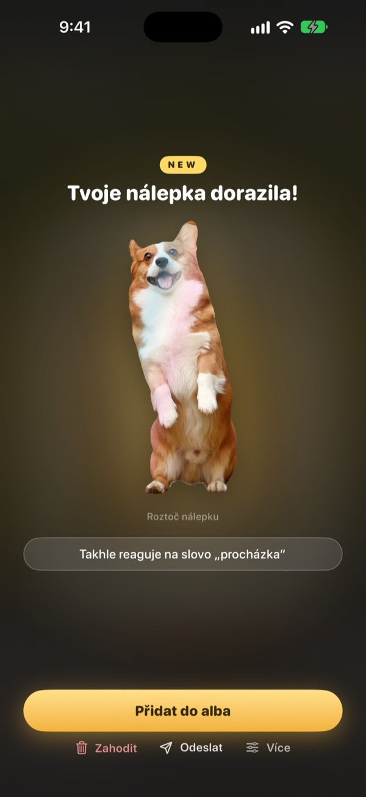
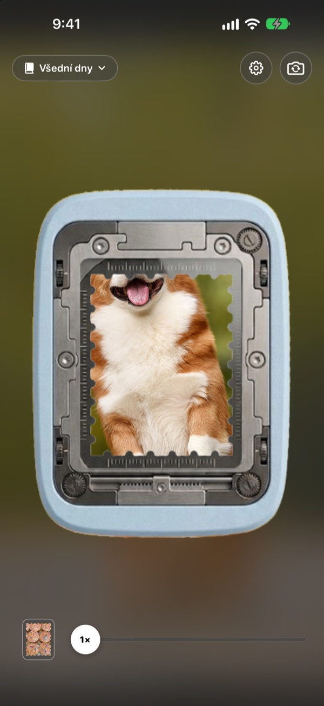
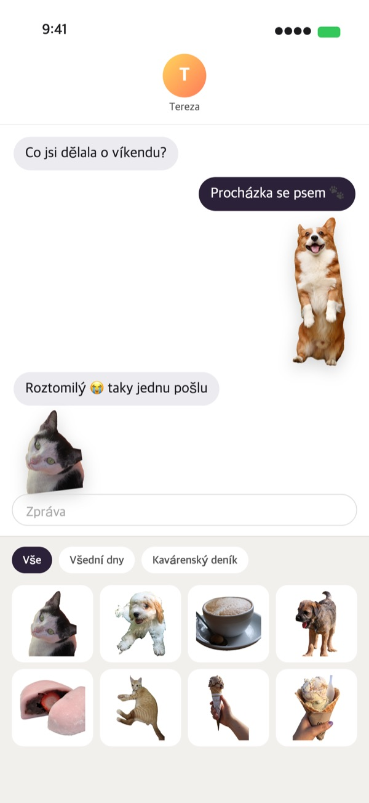
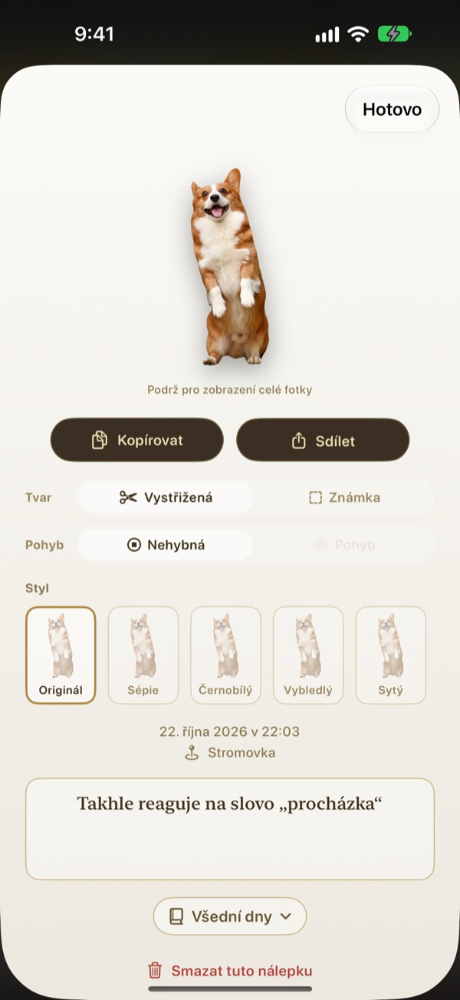
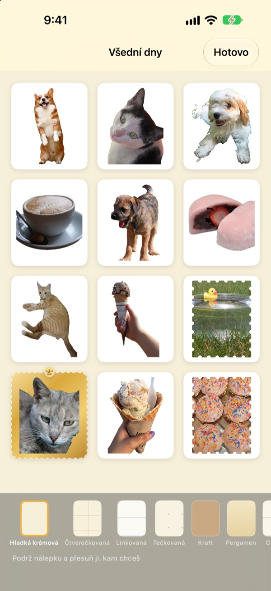

Podrž prst.
A okamžik je nálepka.
Zaměř scénu do okénka dírkovače, podrž a pusť. Pejsek se vystřihne přesně podle svého obrysu a s ním i krátký pohyb těsně před stisknutím a po něm. Hotovou nálepku pošleš hned ze Zpráv nebo z klávesnice.
Všechny funkce jsou zdarma. Nálepky i fotky zůstávají jen ve tvém zařízení.

Vyzkoušej si to
Vyber scénu, podrž tlačítko dírkovače a pusť. Pak zkus jiný tvar a styl.
Nejhezčí okamžiky usínají ve Fotkách
Pejsek vyplázne jazyk a ty ho zrovna vyfotíš. Jenže aby z toho byla nálepka, musíš fotku najít, vystřihnout a otevřít ještě další aplikaci na nálepky. Konverzace mezitím dávno běží dál. Punching odtrhne nálepku přímo tam, kde fotíš, a jakmile ji uložíš do alba, čeká v šuplíku nálepek ve Zprávách.
Objekt se vystřihne, krajina se stane známkou
Když je co vystřihnout, třeba člověk, mazlíček nebo věc, dostaneš jen to. Když ne, jako u krajiny, odtrhne se známka se zoubkovaným okrajem.
S nálepkou se uloží i krátký pohyb těsně před stisknutím a po něm, takže se hýbe.

Rovnou do Zpráv i na klávesnici
Odtržené nálepky se objeví v šuplíku nálepek ve Zprávách. Když zapneš klávesnici Punching, vybereš a vložíš je i v jiných aplikacích.
Pohyblivé nálepky dorazí v pohybu. Podrž nálepku, zkopíruj ji a vlož kamkoli.

Tvar a styl i dodatečně
Mezi vystřiženým tvarem a známkou, pohybem a statickým obrázkem přepínáš, kdy chceš. Původní fotka zůstává uložená, takže i po mnoha změnách je všechno ostré jako poprvé.
Vyber styl Originál, Sépie, Černobílý, Vybledlý, Sytý nebo Azurový a připiš pár slov, datum a místo.

Sbírej do alb, tiskni na papír
Založ si album pro každé téma a ve Zprávách i na klávesnici pak vybíráš album po albu. Zvol stránky jako kraft, čtverečkovaný, linkovaný nebo pergamen a nálepky seřaď podle sebe.
Z alba uděláš PDF k tisku s řeznými čárami ve tvaru známky a vytiskneš ho rovnou na nálepkový papír.

Stačí tři kroky
- 1
Zaměř
To, co chceš uložit, dej do okénka uprostřed fotoaparátu.
- 2
Podrž a pusť
Ve chvíli, kdy pustíš, se nálepka odtrhne.
- 3
Ulož a pošli
Ulož ji do alba a hned ji najdeš ve Zprávách i na klávesnici.
Kde nálepky používat a kde co změnit
- Zprávy
- ＋ vedle textového pole ▸ Nálepky ▸ Nálepky Punching
- Jiné aplikace
- Zapni klávesnici Punching, přepni na ni glóbusem, vyber a vlož
- Kdekoli
- Podrž nálepku, zkopíruj ji a vlož
- Papírové nálepky
- ⋯ v albu ▸ Použití ▸ Arch nálepek k vytištění (PDF)
- Stránky a pořadí
- ⋯ v albu ▸ Libovolně ozdobit
- Starší fotky
- Importovat z Fotek v albu
- Tvar při odtržení
- Nastavení ▸ Odtrhnout ▸ Výchozí tvar
- Přehrávání pohybu
- Nastavení ▸ Zobrazení ▸ Automaticky přehrávat pohyb
- Rychlé spuštění
- Otevřít fotoaparát Punching ve Zkratkách nebo v Ovládacím centru
Nastavení otevřeš ozubeným kolečkem vpravo nahoře na obrazovce fotoaparátu.
Časté otázky
Moje nálepka se nehýbe.
Vpravo nahoře ve fotoaparátu otevři Nastavení ▸ Zobrazení a zkontroluj, že je zapnuté Automaticky přehrávat pohyb. Pak klepni na nálepku a ověř, že je pod položkou Tvar zapnutý Pohyb. Pohyb se ukládá vždy, takže ho můžeš kdykoli zapnout. Fotky importované z aplikace Fotky mají jen jeden snímek, a proto se nehýbou.
Místo vystřižené nálepky mám známku.
Scény, ve kterých není co vystřihnout, třeba krajina, se automaticky odtrhnou jako známka. Klepni na nálepku a pod položkou Tvar to kdykoli změníš. Pokud chceš rovnou začínat se známkami, změň Nastavení ▸ Odtrhnout ▸ Výchozí tvar.
Ve Zprávách nálepky nevidím.
Ve Zprávách klepni na ＋ vedle textového pole ▸ Nálepky a najdi Nálepky Punching. Objeví se, jakmile v Punching odtrhneš aspoň jednu nálepku, a pokud máš víc alb, procházíš je album po albu. Podrobný postup najdeš v Nastavení ▸ Použití ▸ Použití ve Zprávách a na klávesnici.
Jak zapnu klávesnici?
V Nastavení ▸ Použití ▸ Použití ve Zprávách a na klávesnici klepni na Otevřít Nastavení a zapni Klávesnice ▸ Nálepky Punching. Ke vkládání nálepek je potřeba volba Povolit plný přístup, klávesnice ale nikdy nečte ani neodesílá, co píšeš, a nepřipojuje se k internetu. Pak v libovolné aplikaci klepni na glóbus a přepni na Nálepky Punching.
Dají se vytisknout opravdové nálepky?
Klepni vpravo nahoře v albu na ⋯ ▸ Použití ▸ Arch nálepek k vytištění (PDF). Pro celé album vznikne PDF k tisku ve 300 dpi s řeznými čárami ve tvaru známky, připravené pro nálepkový papír v domácí tiskárně i pro tiskárnu. Krok za krokem tě provede Průvodce tiskem ve stejné nabídce.
Kam zmizely moje staré kolekce?
Od verze 1.0.1 se nálepky seskupují jen jedním způsobem: do alb. Z každé kolekce se stalo album se stejným názvem a nálepky, stránky i pořadí se přenesly beze změny.
Ve stavovém řádku svítí zelené světýlko.
To je indikátor fotoaparátu v iOS. Svítí jen tehdy, když je otevřená obrazovka fotoaparátu. Když otevřeš album, fotoaparát se zastaví a světýlko zhasne.
Co se stane, když nálepku smažu?
Nálepka, původní fotka i data pohybu se z tvého zařízení trvale smažou a zmizí i ze šuplíku nálepek ve Zprávách. Obnovit je nejde, takže mazej s rozmyslem.
Kde se ukládají moje fotky a nálepky?
Jen ve tvém zařízení. Žádný účet, žádný vlastní server, žádné reklamy. Ven odcházejí jen anonymní statistiky používání, hlášení chyb a zpětná vazba, kterou pošleš ty. Podrobnosti najdeš v Zásadách ochrany soukromí.
Je to opravdu zdarma?
Ano, všechny funkce jsou zdarma. Pokud se ti aplikace líbí, můžeš vývojáři v aplikaci poslat spropitné, žádné funkce se tím ale neodemykají.
Dotazy nebo nápady posílej na leeo@kakao.com. Obvykle odpovídáme do 2–3 dnů. Chyby a návrhy funkcí můžeš nahlásit i na GitHubu v repozitáři M1zz/StampCamera.